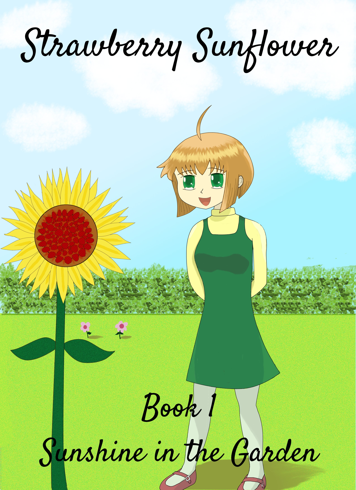

Strawberry Sunflower

See the official blog or buy on Amazon.
Nora Rosen was scouted from her normal neighborhood school because she's a Potential—someone with the "potential" to have a Gift, a special, amazing ability. She's been sent to St. Galgani's Academy, a boarding school where Potentials and Gifted gather.
After two months, Nora still doesn't have any friends. Fortunately, with some help from her teacher, the foxy Miss Hanover, Nora meets Lily van Rossum, whose Gift, the Gift of Gardening, lets her grow all sorts of strange plants. Nora also meets prickly cat girl Cora Fiorentino and sporty Amaranta "Ranta" Reyes, who has the Gift of Running, and the four of them join together to experience the sixth grade at a rather unusual school.
I'm actively working on Strawberry Sunflower right now. The second book is done and just awaits its drawings, and I've begun writing the third book. While I never expected to be putting my drawings out in public, the book needed a visual element, and given the money I could pay, I was the only man for the job. The intended audience is girls ages 8-12 and older fans of moe anime.
It's sort of a fusion of anime and Western children's literature. My main influences were Aria, K-On, and Gakuen Alice among anime, and the works of Roald Dahl, JK Rowling, C.S. Lewis, J.R.R. Tolkien, and of course Lewis Carroll among Western authors.
Trivia
-
The four main girls all have flowers in their names
somewhere:
- Lily van Rossum
- Nora Rosen
- Cora Fiorentino (which comes from fiore, the Italian word for "flower")
- Amaranta Reyes (which is the Spanish name for the amaranth flower)
- Nora's last name, Rosen, is a reference to the title Rosen Queen which is given to Aika Granzchesta in the anime Aria: The Origination.
- Nora's full name is Nora Emily Rosen. Her ancestry is German and Irish.
- Lily's last name, van Rossum, is a reference to Guido van Rossum, creator of the Python programming language. Her ancestry is Dutch, in reference to that.
- Cora's full name is Cora Yolanda Fiorentino. I have down Cora's ancestry as "Italian and tabby" in my notes. Would you believe it confuses me too?
- Ranta's full name is Amaranta Julia Eufemia Marikit de los Reyes III. She hates it and is humiliated to hear it. She is named Amaranta after her great-grandmother, Amaranta Reyes; Eufemia after her grandmother, Eufemia Amaranta Reyes; and Julia after her mother, Julia Eufemia Reyes. Ranta's ancestry is Filipino.
- Miss Hanover's full name is Anne Hanover, a reference to Queen Anne of England.
- Cora is the shortest of the main four. Ranta is the tallest.